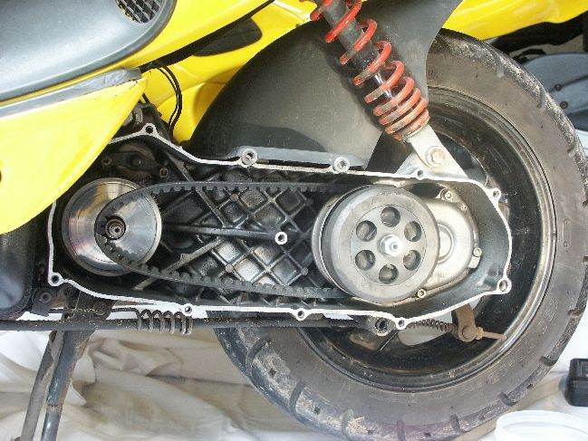

Taller › Transmisión CVT
Taller · Mecánica de scooters
Transmisión CVT: rodillos del variador, muelles del embrague y muelle de contraste
La transmisión variable continua (CVT) de un scooter se reduce a tres componentes clave: los rodillos del variador, los muelles del embrague y el muelle de contraste. Aquí está qué hace cada uno y, sobre todo, qué cambia en la respuesta de la moto cuando aumentas o reduces su peso o su fuerza.

La respuesta rápida
En un scooter, la CVT funciona como un cambio continuo sin marchas: dos poleas conectadas por una correa trapezoidal. El variador (polea motriz, unida al cigüeñal) empuja la correa hacia fuera al subir de revoluciones, variando la relación sin pasos. La polea conducida (en el eje de salida, con el embrague) responde empujando la correa hacia dentro. Los tres componentes que se tocan en el taller modifican el momento en que se abre y se cierra esa polea:
- Rodillos del variador: controlan a qué revoluciones «sube» la correa (el cambio).
- Muelles del embrague: controlan a qué revoluciones se acopla el embrague (el arranque).
- Muelle de contraste: controla la tensión de la correa y a qué revoluciones «baja» la relación (el freno motor y el cambio descendente).
Cambiar el peso de los rodillos o la dureza de los muelles es la forma más barata y rápida de cambiar el carácter de un scooter. La regla mental de oro: rodillos más pesados alargan el desarrollo (menos revoluciones a la misma velocidad), rodillos más ligeros lo acortan (más revoluciones y más respuesta abajo).
Rodillos del variador
Los rodillos son unos cilindros (normalmente seis) que viajan por unas rampas dentro del variador. Al girar el motor, la fuerza centrífuga los empuja hacia fuera por la rampa; ese empuje junta la cara móvil de la polea contra la fija, que aprisiona la correa y la obliga a salir hacia un diámetro mayor. Más diámetro en la polea motriz equivale a una marcha más larga (más velocidad por revolución). Cuando bajas de revoluciones, la fuerza centrífuga cae, los rodillos vuelven hacia dentro y la polea se abre: «bajas de marcha».
Como la fuerza centrífuga depende de masa × velocidad angular², lo que cambias es la masa. El comportamiento en la moto, comparado con los rodillos de serie:
| Cambio | Qué pasa en la polea | Cómo responde la moto |
|---|---|---|
| Rodillos más pesados | Cierran (suben de marcha) antes, a menos revoluciones | Menos revoluciones a la misma velocidad, más punta de velocidad final y menos ruido/vibración al ir en marcha larga; pero la arrancada se siente más «blanda» y menos enérgica, porque alcanza la relación larga demasiado pronto. |
| Rodillos más ligeros | Tardan más en cerrar (suben de marcha más tarde), a más revoluciones | El motor sube de vueltas antes y con más brío: más aceleración y respuesta en el arranque y en el medio, sensación más deportiva; a cambio, cruzas con más revoluciones, hay algo más de ruido/vibración y puedes perder algo de velocidad punta. |
Dicho de otro modo: para sentir el scooter más «vivo» y con mejor aceleración, vas a rodillos algo más ligeros que los de serie. Para que cante menos en autovía y recuperar velocidad máxima, a rodillos más pesados. El truco está en no exagerar: rodillos demasiado ligeros dejan el motor «ahogado» de revoluciones sin avanzar, y demasiado pesados lo dejan «peleando» sin que suba la correa.
Muelles del embrague
El embrague de un scooter es de zapatas centrífugas: al subir de revoluciones, las zapatas se abren y friccionan contra la campana, transmitiendo el movimiento a la rueda. Los muelles que tensan esas zapatas son los que deciden a qué régimen se acoplan.
Cambiando la dureza de los muelles cambias el punto de acople, no el desarrollo de la correa:
| Cambio | Qué pasa en el acople | Cómo responde la moto |
|---|---|---|
| Muelles más blandos | El embrague acopla antes, a menos revoluciones | Arranque suave y progresivo desde muy bajas vueltas: ideal para ciudad, atascos y quien busca comodidad. Contrapartida: menos carácter en la salida y, si son demasiado blandos, el embrague puede patinar o acoplar de forma brusca al soltar el gas. |
| Muelles más duros | El embrague acopla más tarde, a más revoluciones | La moto «empuja» más al abrir gas porque acopla con el motor ya subido de vueltas: salida más enérgica y deportiva. Contrapartida: más brusquedad en tráfico y, si son demasiado duros, el embrague resbala a régimen alto sin llegar a acoplar bien o se desgasta antes. |
Para una salida más vivaz en un scooter tranquilo, unos muelles de embrague algo más duros son un buen primer paso; si lo que buscas es confort urbano, quédate en el valor de fábrica o aligera un punto.
Muelle de contraste
El muelle de contraste (o muelle de la polea conducida) es el que está en la polea trasera, la del lado del embrague. Su trabajo es oponerse a la apertura del variador: mantiene la correa tensa y decide con qué fuerza la polea conducida «devuelve» la relación hacia abajo cuando sueltas el gas. Es el componente que gobierna el freno motor y la rapidez del cambio descendente.
| Cambio | Qué hace el muelle | Cómo responde la moto |
|---|---|---|
| Muelle más duro | Empuja con más fuerza la correa hacia fuera, manteniendo la relación más corta (más revoluciones) | Más freno motor al soltar el gas, el cambio «baja» antes y de forma más decidida, la moto se mantiene con más revoluciones y responde mejor al acelerar tras frenar: sensación más viva y deportiva. Contrapartida: más revoluciones en crucero y un punto más de consumo/ruido. |
| Muelle más blando | Deja que la polea conducida cierre antes (relación más larga, menos revoluciones) | Menos freno motor, el motor «suelta» antes en la polea trasera y se va a menos revoluciones al levantar el gas: conducción más relajada, mejor para autovía y con algo más de velocidad punta. Contrapartida: la correa puede quedar más suelta (tirones o patinazos), peor retención al bajar, y el cambio descendente se siente más perezoso. |
En la práctica, el muelle de contraste es el componente que más se nota al subir de dureza para buscar carácter: da el «empuje» y el freno motor de un scooter más deportivo. Se suele combinar con rodillos más ligeros para aceleración, o se deja de serie para confort.
Combinar los tres: recetas habituales
- Uso urbano / comodidad: rodillos de serie o ligeramente más pesados + muelles de embrague blandos + muelle de contraste de serie. Menos revoluciones y arranques suaves.
- Carácter deportivo / adelantamientos: rodillos más ligeros + muelles de embrague más duros + muelle de contraste más duro. Más aceleración, más freno motor, más revoluciones a cambio.
- Solo autovía / menos ruido: rodillos más pesados + muelles de embrague de serie + muelle de contraste más blando. Menos revoluciones en crucero y más velocidad punta, a costa de respuesta.
No hay una «receta universal»: la CVT se comporta distinto según el peso del scooter, el tamaño de la rueda, la potencia y el estilo de conducción. Cambia un componente cada vez, prueba y compara; y respeta siempre los pesos y medidas de referencia del fabricante. Una CVT mal ajustada (rodillos demasiado ligeros, muelle de contraste excesivo) no solo pierde prestaciones: también calienta y desgasta la correa y las poleas antes de tiempo.
Conclusión
Entender la CVT es entender quién hace cada cosa: los rodillos deciden cuándo «sube» el cambio, los muelles del embrague deciden cuándo arranca la moto, y el muelle de contraste decide cómo «baja» y cuánta retención hay. Variando el peso o la fuerza de cada uno mueves el carácter del scooter entre dos extremos: cómodo y relajado (menos revoluciones) o vivo y deportivo (más revoluciones). Empieza pequeño, cambia de una en una pieza y, si no estás seguro, consulta el manual de tu modelo: la correa y las poleas te lo agradecerán.